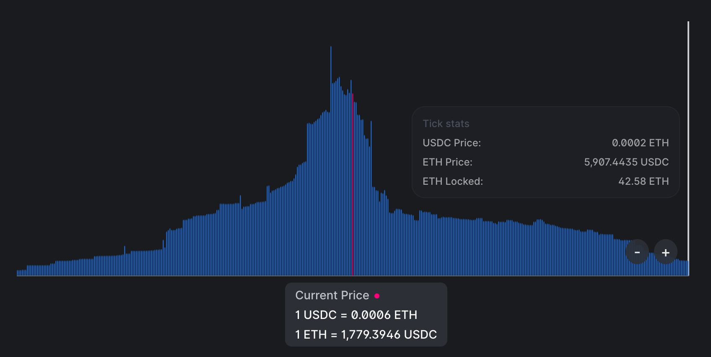
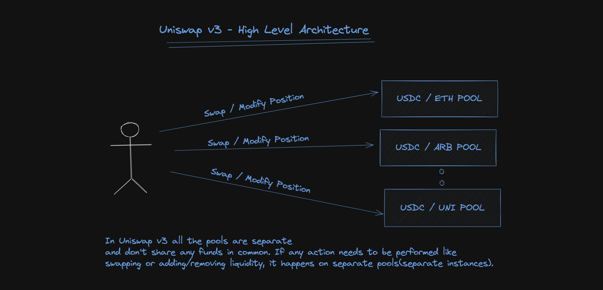
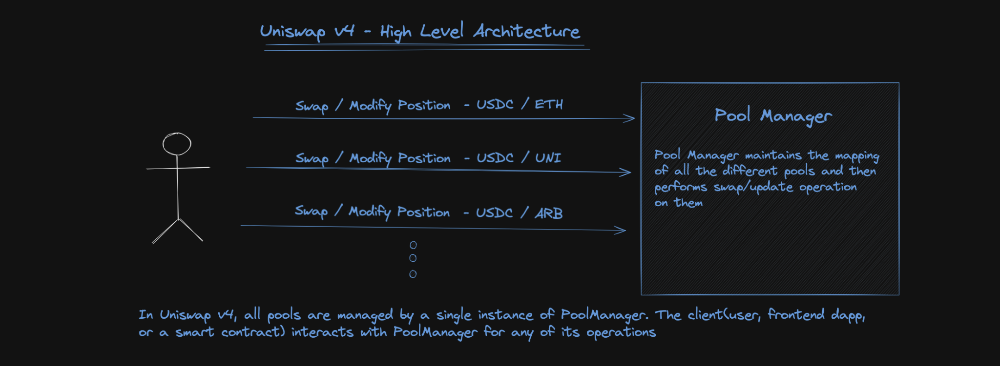
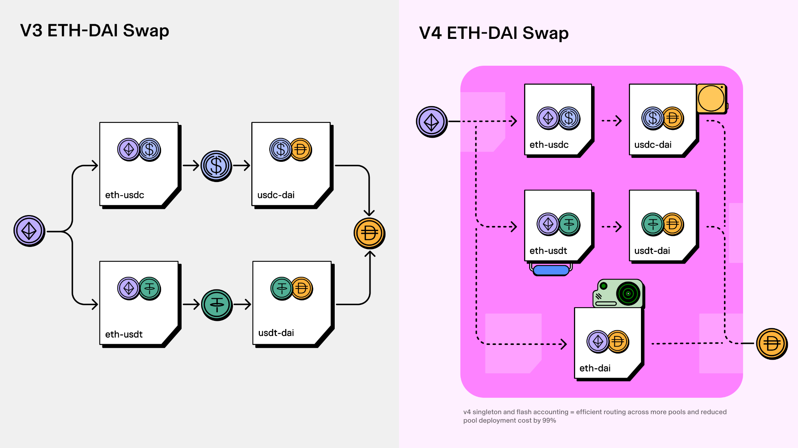
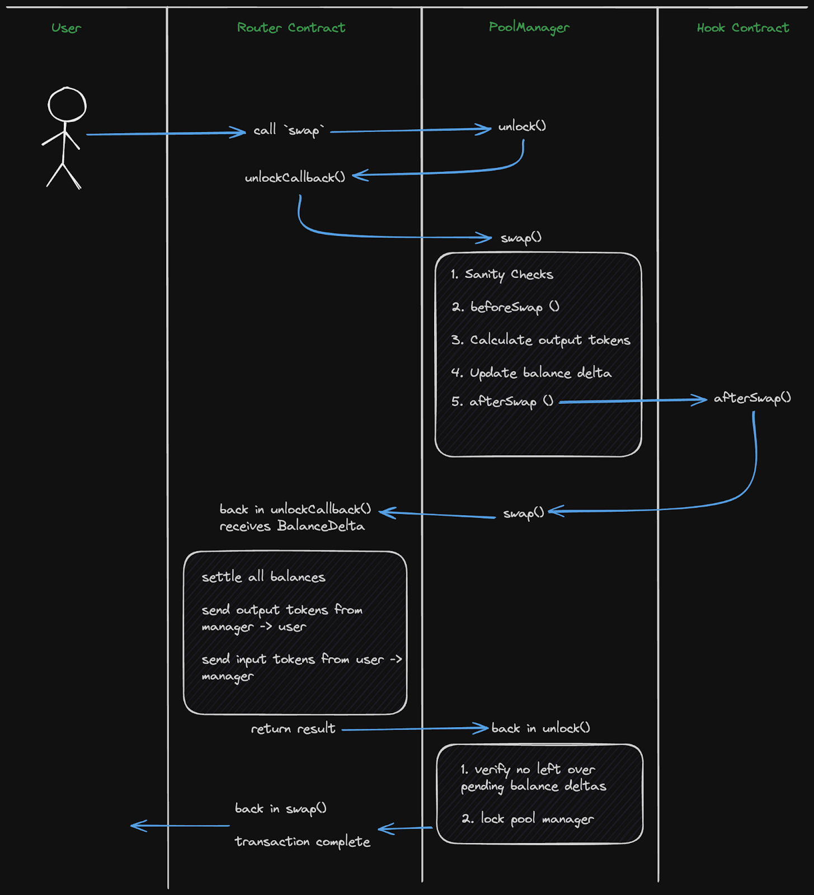
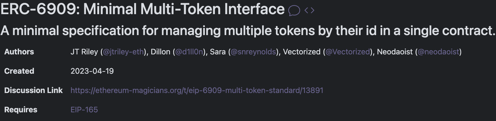
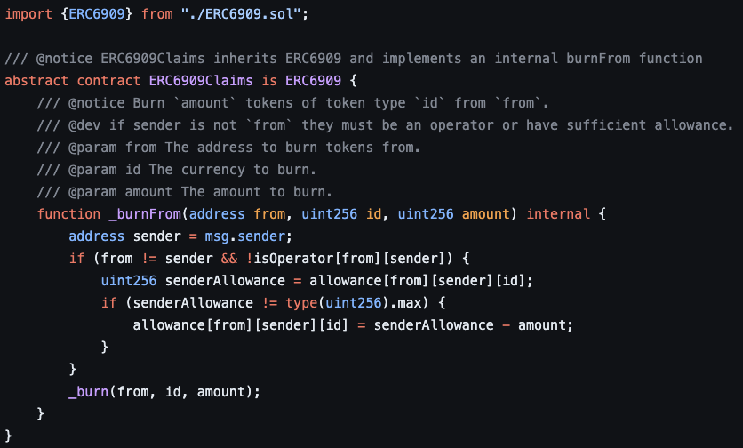
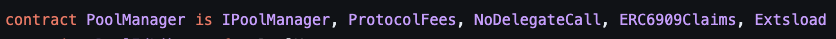
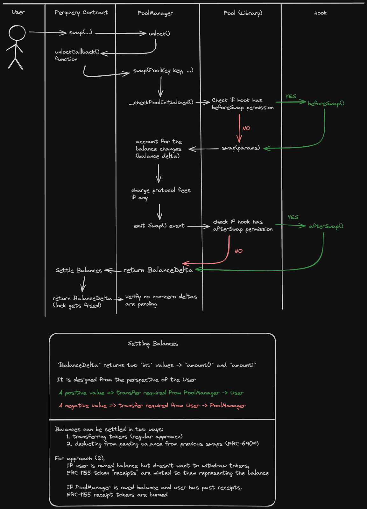
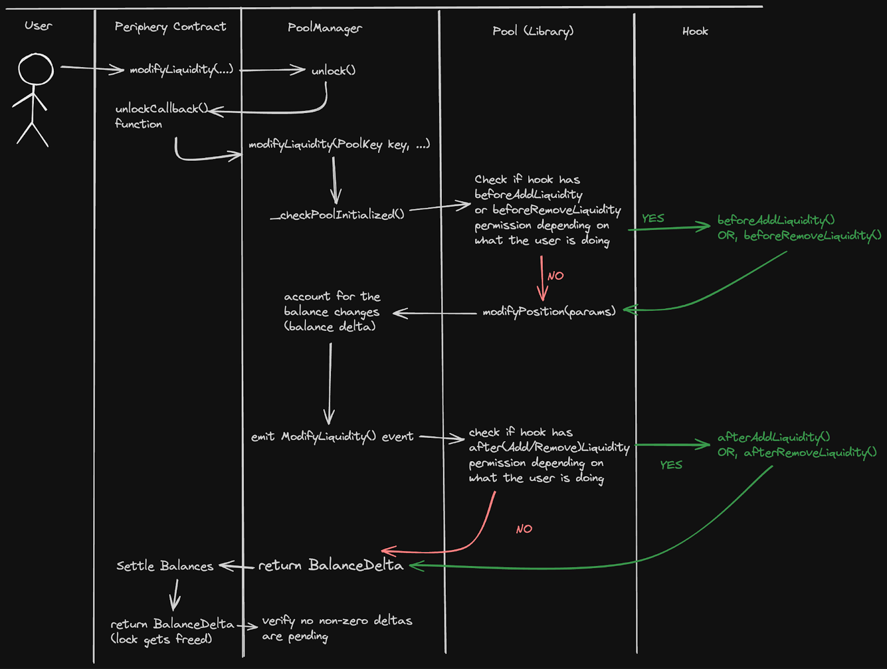

<!doctype html>
<html lang="en">
  <head>
    <meta charset="utf-8">

    <title> DAO </title>

    <meta name="author" content="Dhruvin Parikh">

    <meta name="apple-mobile-web-app-capable" content="yes" />
    <meta name="apple-mobile-web-app-status-bar-style" content="black-translucent" />

    <meta name="viewport" content="width=device-width, initial-scale=1.0, maximum-scale=1.0, user-scalable=no, minimal-ui">

    <link rel="stylesheet" href="../../../reveal.js/css/reveal.css">
    <link rel="stylesheet" href="../../../reveal.js/css/theme/moon.css" id="theme">

    <!-- Code syntax highlighting -->
    <link rel="stylesheet" href="../../../reveal.js/lib/css/zenburn.css">

    <!-- Printing and PDF exports -->
    <script>
      var link = document.createElement( 'link' );
      link.rel = 'stylesheet';
      link.type = 'text/css';
      link.href = window.location.search.match( /print-pdf/gi ) ? '../../../reveal.js/css/print/pdf.css' : '../../../reveal.js/css/print/paper.css';
      document.getElementsByTagName( 'head' )[0].appendChild( link );
    </script>

    <!--[if lt IE 9]>
    <script src="../reveal.js/lib/js/html5shiv.js"></script>
    <![endif]-->

    <style>
      .reveal .slides h1, .reveal .slides h2, .reveal .slides h3 {
        text-transform: none;
      }

      .two-column {
        display: flex;
        flex-wrap: wrap;
      }

      .two-column em {
        margin: 20px;
      }

      .credits {
          font-size: small;
      }

      .left {
              left:-8.33%;
              text-align: left;
              float: left;
              width:49%;
              z-index:-10;
            }
      
    .right {
        left:31.25%;
        top: 75px;
        text-align: left;
        float: right;
        z-index:-10;
        width:49%;
    }
    </style>
  </head>

  <body>
    <div class="reveal">
      <div class="slides">

<!------------------------------------------------------->


<section data-markdown><script type="text/template">

### Metana Web3 Solidity Bootcamp

#### UniswapV4 technical introduction 

*Dhruvin Parikh, November 2024*

</script></section>

<section data-markdown><script type="text/template">

## `$WHOAMI`

* DeFi developer and Web3.0 Instructor.
* Currently,
    * Sr. Blockchain Engineer at frax.finance
    * Blockchain Instructor at York University
* Previously,  
    * VP Engineering at $DINERO protocol
    * CTO and lead Blockchain Developer at $OPTY fi
    * Adjunct Professor at George Brown College

</script></section>

<section data-markdown><script type="text/template">

## Lesson Topics


</script></section>


<section data-markdown><script type="text/template">

## Uniswap V3 Concentrated Liquidity




</script></section>


<section data-markdown><script type="text/template">

## Singleton Architecture




</script></section>


<section data-markdown><script type="text/template">

## `UniswapV3Factory`

```
contract UniswapV3Factory {
	// This mapping is from "Token X" -> "Token Y" -> "Tick Spacing" -> "Pool Contract Address"
	// e.g. USDC -> WETH -> 10 -> 0x0....
	mapping(address => mapping(address => mapping(uint24 => address))) public pools;

	function createPool(address tokenX, address tokenY, uint24 fee, ...) {
		// Necessary checks

		address pool = new UniswapV3Pool{salt: ...}(); // CREATE2 Deployment
		pools[tokenX][tokenY][tickSpacing] = pool;
    }
}
```

</script></section>


<section data-markdown><script type="text/template">

## UniswapV4 Design



</script></section>


<section data-markdown><script type="text/template">

## Pool library
```
library Pool {
	function initialize(State storage self, ...) {
      ...
    }
  
  	function swap(State storage self, ...) {
      ...
    }
  
  	function modifyPosition(State storage self, ...) {
      ...
    }
}

// PoolManager
contract PoolManager {

	using Pools for *;
	mapping (PoolId id => Pool.State) internal pools;

	function swap(PoolId id, ...) {
		pools[id].swap(...); // Library Call
	}
}
```
</script></section>


<section data-markdown><script type="text/template">

## UniswapV3 `slot0`

```
interface IUniswapV3PoolState {
	function slot0() external view returns (
		uint160 sqrtPriceX96,
		int24 tick,
		uint16 observationIndex,
		uint16 observationCardinality,
		uint16 observationCardinalityNext,
		uint8 feeProtocol,
		bool unlocked
	);

	// Other view functions for a few other things
}
```

</script></section>

<section data-markdown><script type="text/template">

#### v4's singleton design is made possible because pools, instead of being independent smart contracts, are represented through ____?

* The Pool state structs and associated library functions
* A single separate smart contract managing all pools

</script></section>


<section data-markdown><script type="text/template">

#### v4's singleton design is made possible because pools, instead of being independent smart contracts, are represented through ____?

* **The Pool state structs and associated library functions**
* A single separate smart contract managing all pools

</script></section>

<section data-markdown><script type="text/template">

## Flash Accounting



</script></section>

<section data-markdown><script type="text/template">

#### How many token transfers will take place in v4 if a multi-hop swap is done which goes over 5 different pools?

* 1 (Input) + 1 (Output) = 2
* 1 (Input to Pool 1) + 2 (Output of Pool 1 + Input to Pool 2) + 2 + 2 + 2 + 2 + 1 (Final Output) = 12
* 1 (Input) + 5 (1 per Pool) + 1 (Output) = 7

</script></section>

<section data-markdown><script type="text/template">

#### How many token transfers will take place in v4 if a multi-hop swap is done which goes over 5 different pools?

* 1 (Input) + 1 (Output) = 2
* 1 (Input to Pool 1) + 2 (Output of Pool 1 + Input to Pool 2) + 2 + 2 + 2 + 2 + 1 (Final Output) = 12
* **1 (Input) + 5 (1 per Pool) + 1 (Output) = 7**

</script></section>

<section data-markdown><script type="text/template">

## Locking

```
function unlock(bytes calldata data)
	external
	override
	noDelegateCall
	returns (bytes memory result) {
		if (Lock.isUnlocked()) revert AlreadyUnlocked();

		Lock.unlock();
		
		// The caller does everything they want inside this callback
		result = IUnlockCallback(msg.sender).unlockCallback(data);
	
		if (NonZeroDeltaCount.read() != 0) revert CurrencyNotSettled();
		Lock.lock();
}
```
</script></section>

<section data-markdown><script type="text/template">

## `afterSwap` flow



</script></section>

<section data-markdown><script type="text/template">

## Transient storage

```
library Lock {
  // The slot holding the unlocked state, transiently. uint256(keccak256("Unlocked")) - 1;
  uint256 constant IS_UNLOCKED_SLOT = uint256(0xc090fc4683624cfc3884e9d8de5eca132f2d0ec062aff75d43c0465d5ceeab23);

  function unlock() internal {
      uint256 slot = IS_UNLOCKED_SLOT;
      assembly {
          // unlock
          tstore(slot, true)
      }
  }

  function lock() internal {
      uint256 slot = IS_UNLOCKED_SLOT;
      assembly {
          tstore(slot, false)
      }
  }

  function isUnlocked() internal view returns (bool unlocked) {
      uint256 slot = IS_UNLOCKED_SLOT;
      assembly {
          unlocked := tload(slot)
      }
  }
}
```

</script></section>

<section data-markdown><script type="text/template">

## What are the advantages of using transient storage for maintaining the lock state? Select all that apply.

* It is cheaper to read/write than the storage data location 
* The information represented is useless outside the scope of the currently executing transaction
* It makes the transaction speed up and guarantees inclusion in the next block

</script></section>


<section data-markdown><script type="text/template">

## What are the advantages of using transient storage for maintaining the lock state? Select all that apply.

* **It is cheaper to read/write than the storage data location** 
* The information represented is useless outside the scope of the currently executing transaction
* It makes the transaction speed up and guarantees inclusion in the next block

</script></section>

<section data-markdown><script type="text/template">

## ERC6909



</script></section>

<section data-markdown><script type="text/template">

## ERC6909 claim tokens

* For v4, ERC-6909 is used to represent claim tokens. 

<br/>

</script></section>


<section data-markdown><script type="text/template">

#### Why is minting/burning claim tokens cheaper than actually transferring ERC-20 tokens around? Select all that apply.

* No external function calls to external smart contracts
* No overhead of custom transfer implementations in external contracts

</script></section>


<section data-markdown><script type="text/template">

#### Why is minting/burning claim tokens cheaper than actually transferring ERC-20 tokens around? Select all that apply.

* No external function calls to external smart contracts
* **No overhead of custom transfer implementations in external contracts**

</script></section>


<section data-markdown><script type="text/template">

## Types of hooks

```
* beforeInitialize

* afterInitialize


* beforeAddLiquidity

* afterAddLiquidity

* beforeRemoveLiquidity

* afterRemoveLiquidity


* beforeSwap

* afterSwap


* beforeDonate

* afterDonate


* beforeSwapReturnDelta

* afterSwapReturnDelta

* afterAddLiquidityReturnDelta

* afterRemoveLiquidityReturnDelta

```


</script></section>

<section data-markdown><script type="text/template">

## Hook Address Bitmap

* addresses on Ethereum are 20 bytes long (160 bits). So, for example the address
```
0x0000000000000000000000000000000000000090
```
* represented in binary is:
```
0000 0000 0000 0000 0000 0000 0000 0000 0000 0000 0000 0000 0000 0000 0000 
0000 0000 0000 0000 0000 0000 0000 0000 0000 0000 0000 0000 0000 0000 0000 
0000 0000 0000 0000 0000 0000 0000 0000 1001 0000
```
</script></section>

<section data-markdown><script type="text/template">

## Hook Address Bitmap (cont'nd)

```
1st Bit = 0

2nd Bit = 0

3rd Bit = 0

4th Bit = 0

5th Bit = 1

6th Bit = 0

7th Bit = 0

8th Bit = 1
```
https://github.com/Uniswap/v4-core/blob/main/src/libraries/Hooks.sol
</script></section>

<section data-markdown><script type="text/template">

#### Which hook functions are implemented (assuming no lie) for the hook contract `0x000000000000000000000000000000000000000A` ? Select all that apply.

* `beforeInitialize`
* `afterSwap`
* `beforeSwapReturnDelta`
* `afterAddLiquidityReturnDelta`

</script></section>

<section data-markdown><script type="text/template">

#### Which hook functions are implemented (assuming no lie) for the hook contract `0x000000000000000000000000000000000000000A` ? Select all that apply.

* `beforeInitialize`
* `afterSwap`
* **`beforeSwapReturnDelta`**
* **`afterAddLiquidityReturnDelta`**

</script></section>

<section data-markdown><script type="text/template">

## Swap flow



</script></section>

<section data-markdown><script type="text/template">

## Liquidity Position modification flow



</script></section>

<section data-markdown><script type="text/template">

## Concerns

* Gas Considerations
* Liquidity Fragmentation
* BSL Licensing

</script></section>

<section data-markdown><script type="text/template">

## References

* https://docs.uniswap.org/contracts/v4/overview

</script></section>

<section data-markdown><script type="text/template">

## End

</script></section>


<!------------------------------------------------------->


      </div>

    </div>

    <script src="../../../reveal.js/lib/js/head.min.js"></script>
    <script src="../../../reveal.js/js/reveal.js"></script>

    <script>

      // Full list of configuration options available at:
      // https://github.com/hakimel/reveal.js#configuration
      Reveal.initialize({
        controls: true,
        progress: true,
        history: true,
        center: true,

        transition: 'none', // none/fade/slide/convex/concave/zoom

	math: {
          mathjax: '../../../lib/MathJax/MathJax.js',
          config: 'TeX-AMS_SVG-full',
	},

        // Optional reveal.js plugins
        dependencies: [
          { src: '../../../reveal.js/plugin/markdown/marked.js', condition: function() { return !!document.querySelector( '[data-markdown]' ); } },
          { src: '../../../reveal.js/plugin/markdown/markdown.js', condition: function() { return !!document.querySelector( '[data-markdown]' ); } },
          { src: '../../../reveal.js/plugin/highlight/highlight.js', async: true, callback: function() { hljs.initHighlightingOnLoad(); } },
          // { src: '../../../reveal.js/plugin/math/math.js', async: true },
           // Zoom in and out with Alt+click
           { src: "../../../reveal.js/plugin/zoom-js/zoom.js", async: true },
        ]
      });

    </script>

  </body>
</html>
